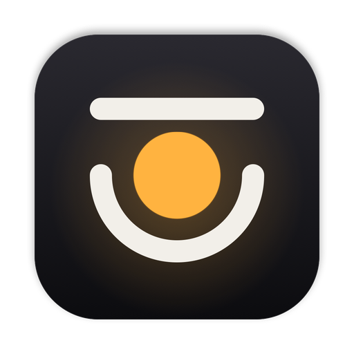
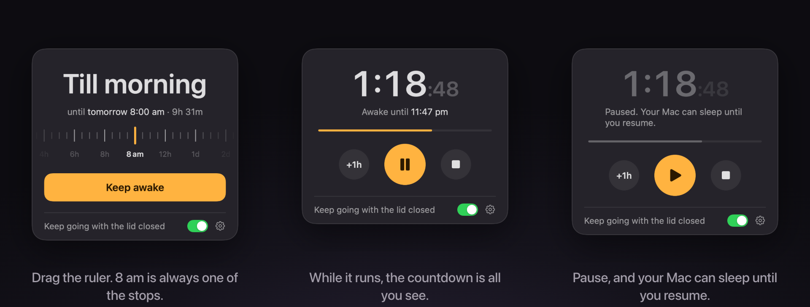
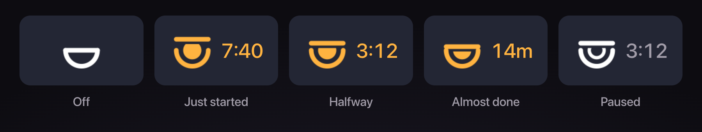

Wink is a menu bar app that keeps your Mac awake, lid open or shut, for exactly as long as you choose. Then it lets your Mac sleep like normal.
curl -fsSL https://raw.githubusercontent.com/pavan-parallel/wink/main/scripts/install.sh | bashDrag or scroll the ruler from fifteen minutes to a week, or forever. There's always a stop for 8 am, so leaving it running overnight is one drag. Wink tells you when it ends, not just how long.

An eye under a lid. While Wink is keeping your Mac awake the eye is amber, and the lid comes down as your time runs out. When it shuts, your Mac sleeps normally again.

Below 15% by default, so a laptop running in your bag doesn't drain flat. You choose the number.
When macOS reports critical heat, Wink lets the Mac sleep. For long runs, leave it somewhere with a bit of air.
The timer ends, you pause, you quit, or Wink crashes: in every case your Mac goes back to sleeping normally.
With the lid open, Wink holds the same power assertion as caffeinate. With the lid shut on battery, the only switch macOS respects is pmset disablesleep, which needs admin rights. So the first time, Wink asks for your password once and adds a one-line rule that allows those two commands and nothing else.
If you once ran sudo pmset disablesleep 1 and forgot about it, Wink notices and offers to turn normal sleep back on.
# /etc/sudoers.d/wink
you ALL=(root) NOPASSWD: /usr/bin/pmset -a disablesleep 0, /usr/bin/pmset -a disablesleep 1Wink answers to wink:// links and a small wink command. Add two hooks to Claude Code and your Mac stays awake while Claude works, then sleeps when it's done.
wink start 2h
wink until 08:00
wink pause · wink resume · wink stop
# ~/.claude/settings.json
"hooks": {
"UserPromptSubmit": [{ "hooks": [{ "type": "command",
"command": "open -g 'wink://start?for=forever'" }] }],
"Stop": [{ "hooks": [{ "type": "command",
"command": "open -g 'wink://stop'" }] }]
}It works while the lid is open. On battery, closing the lid puts the Mac to sleep regardless of any assertion.
Wink isn't notarized by Apple yet. Right-click the app in Applications and choose Open the first time. The install command does this for you.
Amphetamine is excellent and does far more. Wink does one thing with one gesture, and it's open source, so you can read exactly what it changes on your system.
No. Wink makes no network requests at all.
Quit Wink from its Settings, delete it from Applications, then run sudo rm /etc/sudoers.d/wink to remove the lid-closed rule.